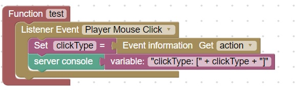
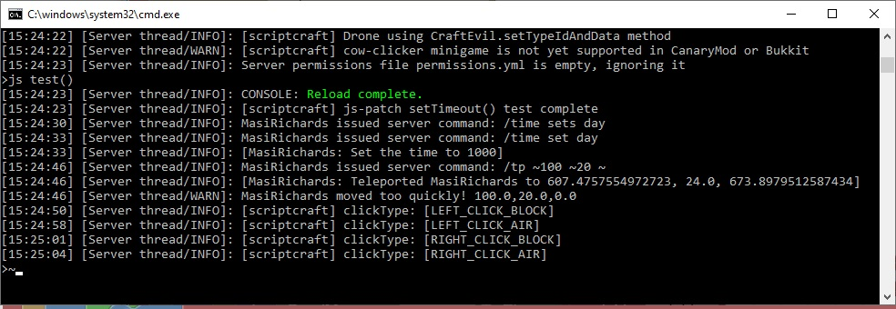
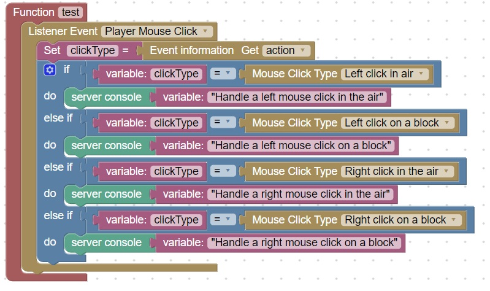

Mouse Click Types
There are 4 types of mouse clicks that can occur:
- Left click on air
- Left click on block
- Right click on air
- Right click on block
This code will print the type of click in the server console:

You should then see on the server:

To handle the different types of mouse clicks you can make an if-else if structure:

Note: "click on air" does not necessarily mean you are clicking in the sky. You may be pointed at a block, but the block is out of range to be selected